Health Insurance • Wireframing • User Research
SwasBridge

SwasBridge is a health insurance platform designed to help users not just file claims but actively engage with their wellness benefits. While most insurance platforms focus on post-crisis interactions, SwasBridge reimagines the experience to prioritize proactive care, making wellness accessible, clear, and consistent.
AProblem
What was broken for stakeholders?
SwasBridge aimed to enter the health insurance space with a fresh perspective: one that goes beyond traditional claims and paperwork. They wanted to design an experience that not only simplified health coverage, but also empowered users to actively engage with their wellness benefits.
While most insurance platforms focus on crisis management, SwasBridge saw an opportunity to stand out by creating a product that made preventive care and wellness feel accessible, valuable, and easy to use.
BMy Role
What was my contribution?
At SwasBridge, I led the design for the health and wellness section, enabling users to navigate and use preventive care features. I conducted primary research with both insurance users and aggregators like Ditto, translating insights into clear user flows.
At SwasBridge, I focused on:
- Identifying key user pain points through primary research
- Benchmarking existing platforms to define opportunities
- Designing intuitive wireframes to reduce information overload
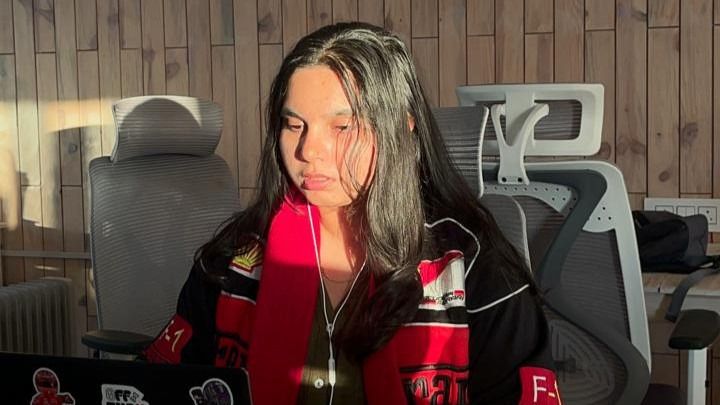
CResearch
What did stakeholders and users tell us?
Objective
To design a user-centered health insurance experience that simplifies plan navigation, highlights wellness benefits, and encourages proactive engagement — making insurance feel less intimidating and more human.
Stakeholders Involved
Product Owners
Provided insights into business goals, the need to streamline health insurance processes, and key performance indicators.
Health & Wellness Team
Discussed technical requirements for integration with the given requirements and making the experience user-centric.
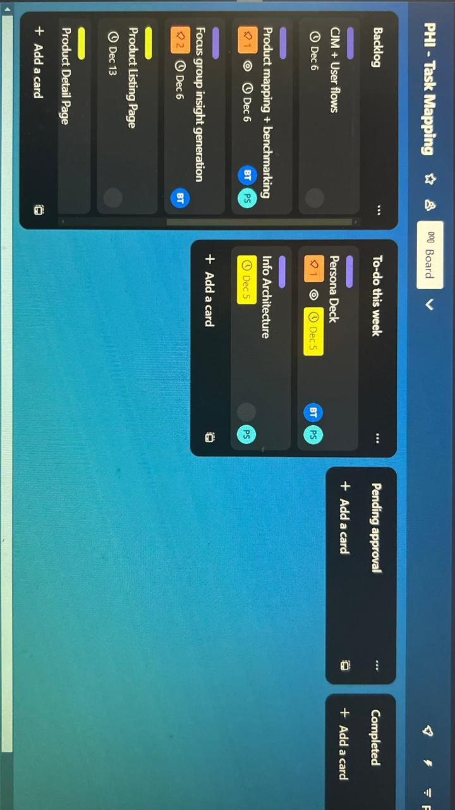
From Insurance to Assurance
Health insurance isn't just about claims, it's about care. Users want to feel supported even before something goes wrong. But current platforms often confuse, overwhelm, or under-deliver on wellness benefits.
There's a strong opportunity to shift from transactional experiences to thoughtful, wellness-first journeys — designed to inform, support, and build lasting trust.
"Didn't understand what they were covered for"
Pain Point: Users were confused about what their policy actually covered.
✅ Highlight: Lack of transparency and overwhelming jargon leads to mistrust.
"Felt like they were selling a product, not guiding"
Pain Point: Users often felt like agents or platforms were transactional.
✅ Highlight: Emotional gap — users want assurance, not salesy experiences.
"Wellness benefits were not visible or emphasized"
Pain Point: Users didn't know about or engage with wellness features in their plan.
✅ Highlight: Benefits beyond hospitalization (like fitness, mental health) aren't being surfaced clearly.
"Too many documents, felt exhausting"
Pain Point: Users mentioned friction due to excessive paperwork and policy documents.
✅ Highlight: Even digitally, insurance still "feels like admin work," not support.
As part of secondary research, I benchmarked key insurance and wellness platforms including HDFC Ergo, ICICI Lombard, Niva Bhupa, and Aditya Birla. I compared features like claims, hospitality and health, non-medical, waiting period, and others to identify gaps and opportunities.
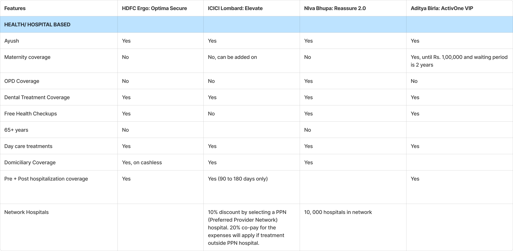
DKey Insights
What actually shaped the direction?
Trust broke down before a claim was even filed
Users didn't understand what their policy covered from day one — the confusion wasn't a claims-time problem, it was a comprehension problem baked into onboarding.
Users wanted guidance, not a pitch
The gap between feeling "sold to" and feeling "guided" was the clearest emotional opportunity — this pointed the design toward reassurance and clarity over persuasion.
Wellness benefits had a discovery problem, not a UI problem
Users weren't disengaged because the features were hard to use — many didn't know the benefits existed at all, which meant surfacing them mattered more than polishing them.
Digital paperwork still felt like admin work
Even without physical documents, the process still read as compliance rather than care — cutting friction alone wouldn't be enough; the tone of the experience had to change too.
EDesign Decisions
How did each insight turn into a call?
Insight → Trust broke down before a claim was even filed
Decision: Followed the double diamond method end to end, with client feedback built into every stage from requirement-gathering to final screens — so coverage and benefits information was validated for clarity before it ever reached a user, not patched afterward.
To address the requirements, I followed the double diamond method.
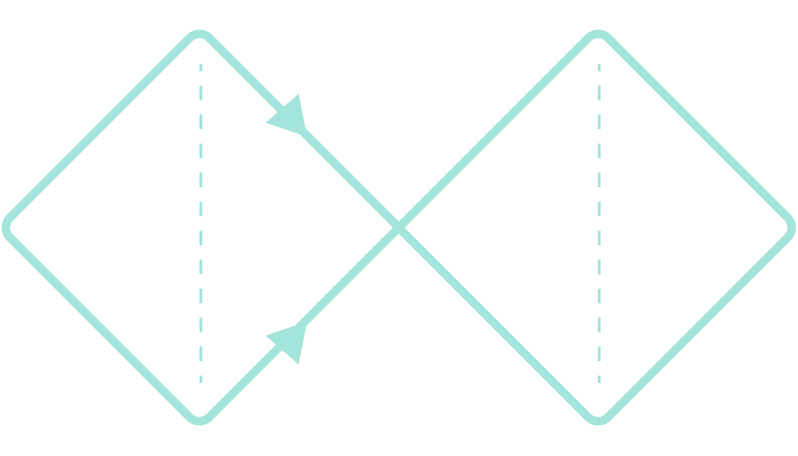
Client feedback played a crucial role which helped shape the designs better — feedback occurred all the way from gathering requirements to designing the screens.
Insight → Wellness benefits had a discovery problem
Decision: Standardized the information architecture with a single design system, then mapped user flows before any screens were drawn — so wellness features had a clear, consistent path to be found rather than being buried behind claims-first navigation.
Below is a glimpse of the design system created on Figma to maintain consistency:
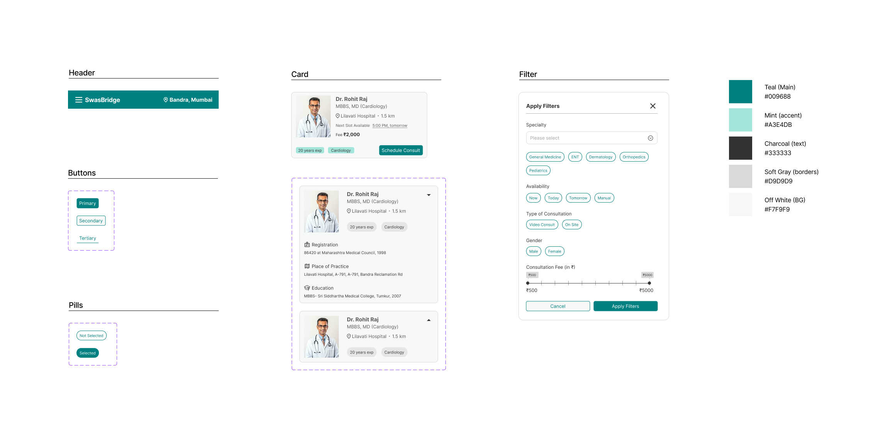
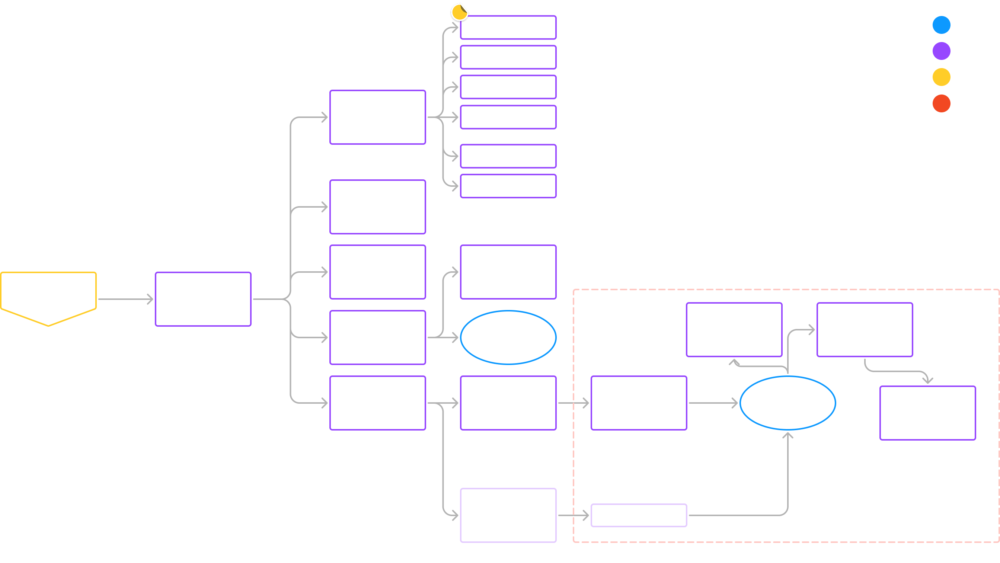
Insight → Digital paperwork still felt like admin work
Decision: Designed the BMR calculator to respond directly to how a user was doing — showing numbers and charts for a healthy result, and precautions for a higher-risk result — so the experience felt like guidance from the first interaction, not a form to get through.
After a lot of benchmarking, analyzing data and pain points, and creating the user flows, I designed the wireframes. Here, I've shown how the BMR calculator functions in happy and sad scenarios.
Flow Start ⬇️
✅ As an existing user, the data is pre-filled
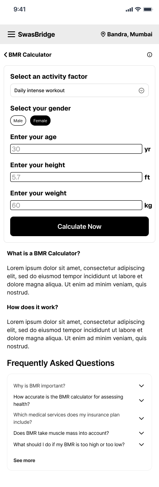
STP ⬇️
✅ The user is shown they're healthy, with numbers and charts
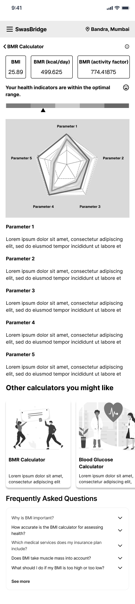
NSTP ➡️
✅ The user is shown they're in the obese range and need to watch for symptoms
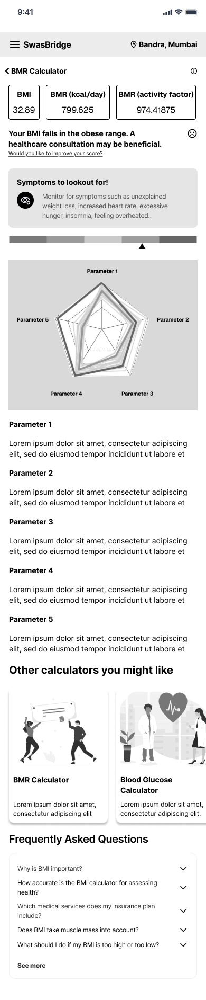
✅ As the user is overwhelmed with the bad news, the platform recommends precautions
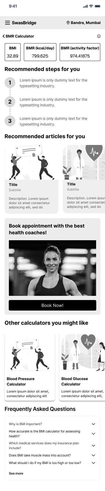
Insight → Users wanted guidance, not a pitch
Decision: Carried that same guided tone into the booking-appointment flow — filters to personalize the search, full doctor details before committing, and clear payment confirmation — each screen was built to build trust at that specific step, not just move the user forward.
To keep the focus on UI and functionality, I'm showing the booking-appointment flow. A colour pop was a necessity after working on the black and white wireframes!
Apply filters to find a suitable doctor
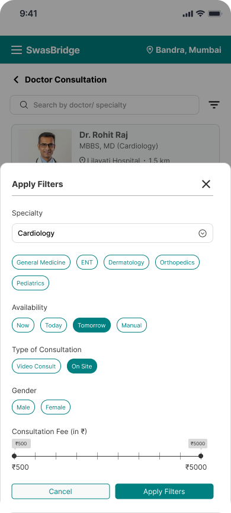
✅ This screen empowers users to personalize their search, saving time by showing only relevant doctors.
View detailed doctor info + book a consultation slot
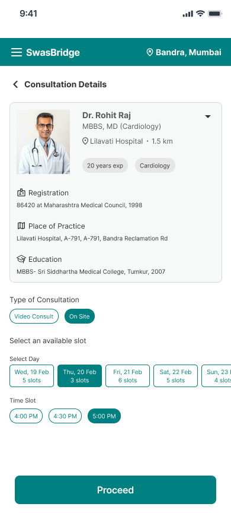
✅ This screen builds trust and lets users confidently book a doctor after reviewing key details.
Confirmed successful payment
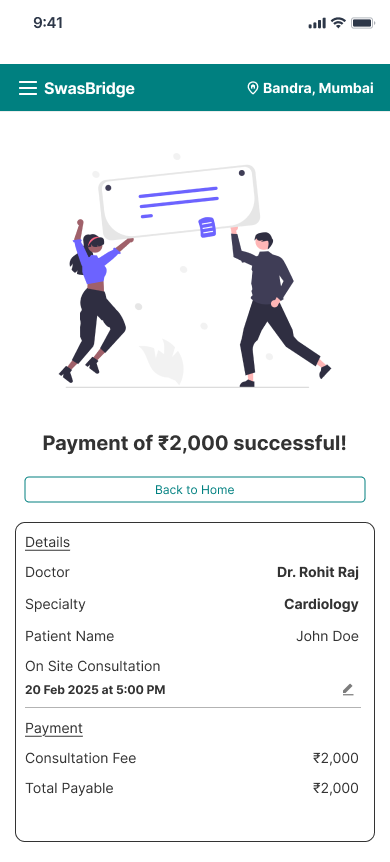
✅ Gives users closure and confirmation, increasing reliability and trust in the platform.
FFinal Solution
What did it look like end to end?
GValidation & Collaboration
How was it tested against reality?
Continuous Communication
Always in the loop with both teams, understanding their restrictions and possibilities.
Challenges & Solutions
Early-stage friction around creating a smooth experience was resolved after a few workshops, getting all teams on the same page.
HOutcome
What changed as a result?
Enhancing Preventive Health Engagement
Improved user engagement with wellness features by simplifying access and navigation, leading to better awareness around preventive care and early diagnosis.
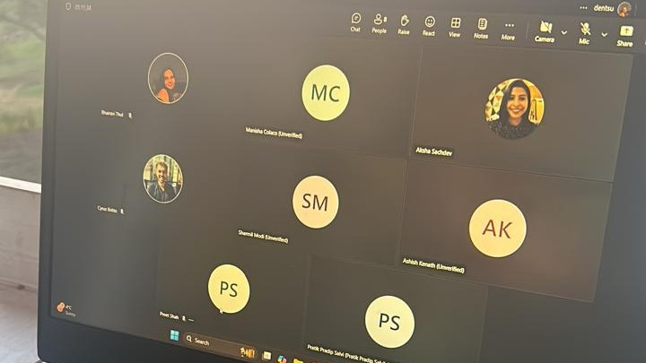
ILearnings
What I'd carry into the next project
Cadence over convenience
Client conversations happened around milestones rather than on a fixed schedule. A standing check-in, even a short one, would have caught ambiguity in requirements sooner and kept the design process moving without waiting on clarification.